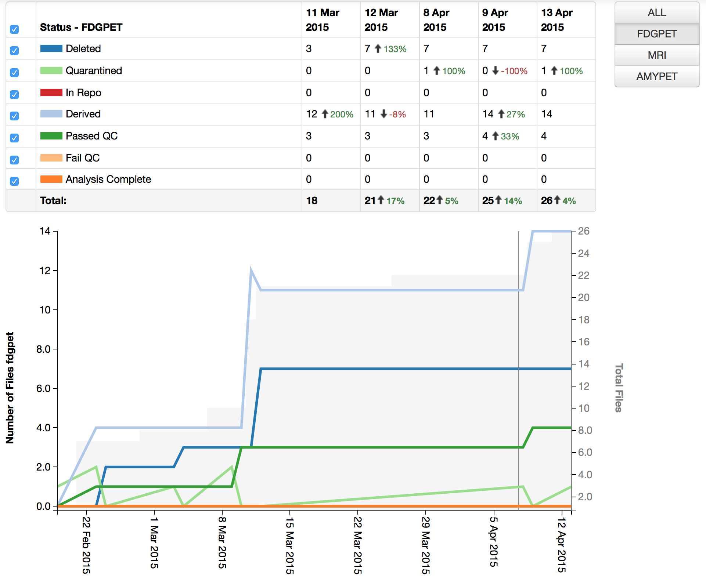
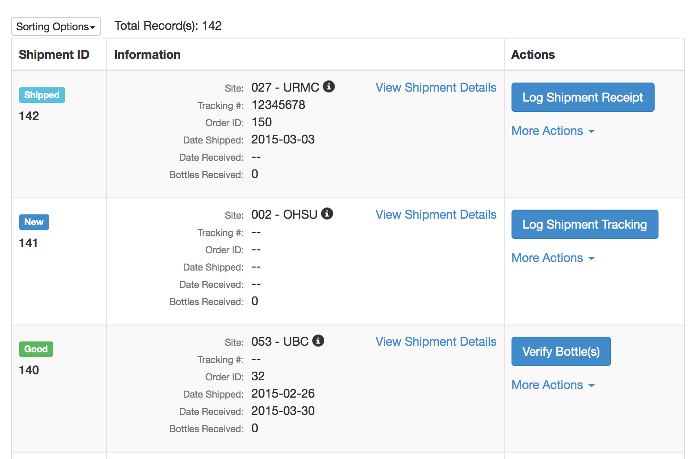
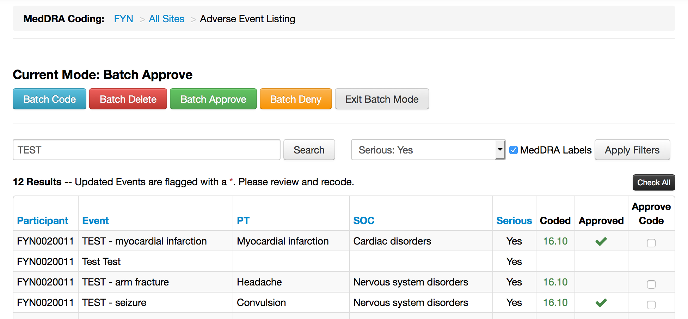
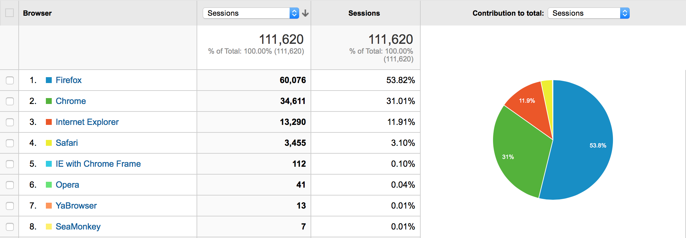
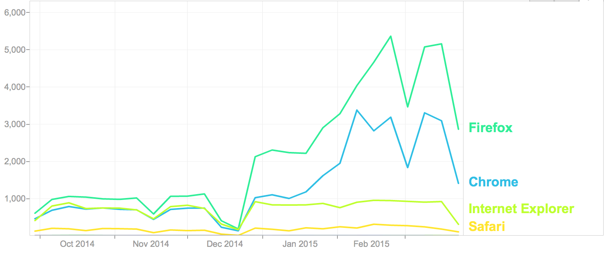
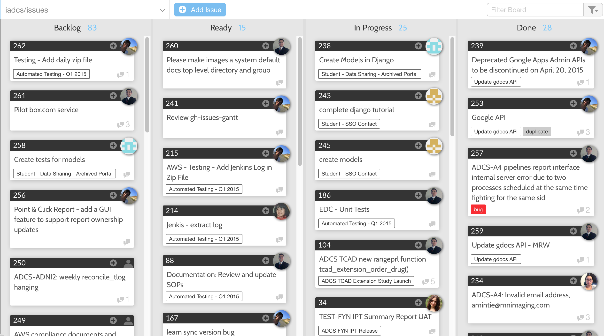

Informatics Core
Gustavo Jimenez-Maggiora, MBA
Washington, DC
April 19th, 2015
Updates
New Data Portals
| Portal | Status |
|---|---|
| FYN | Launched!!! |
| ADNID | Launched!!! |
| CCF-RAS | Launched!!! |
| LEARN | May, 2015 |
| TCAD Extension | May, 2015 |
| EX | In progress... |
| CSF 1 | In progress... |
Amazon Web Services (AWS)
- We have migrated the majority of our Data Portals to AWS
- Remaining Data Portals:
- A4
- TCAD
Application Improvements
- Based on user feedback, we have made improvements to the following apps:
- Images
- IP Tracking
- MedDRA
- Queries
Images
Improvements
- Multiple modalities
- Study-specific, multi-user collaborative workflows
- Traceability and transparency
- Tagging capabilities allow users to flexibly organize and search for images
- Manage processed or derived images
- Link derived images to source images to establish provenance across modalities
- Visualize and navigate using inheritance trees
- Multi-file upload, linking and tagging
- Improved reporting and tracking of workflow inventory and performance metrics
Images - Menu

Images - Seach

Images - Batch Upload, Linking and Tagging

Images - Amyloid Pet Workflow

Images - Hierarchy

Images - Metrics

Release Schedule
- Launched on FYN
- Plan to upgrade in the next 6 months:
- A4 / LEARN
- INI
- TCAD
IP Tracking
Improvements
- Cleaner, more intuitive interface
- Configurable data per menu
- Smart action links
- Additional details…
- Advanced filters
- Color statuses
- New “Cart” interface
- Automated drug ordering/resupply
- Additional new features based on user feedback
- Download CSV
- Status report (interactive chart report)
IPT - Menu

IPT - Cart

IPT - Status Report

Release Schedule
- Launched on FYN
- TCAD - May, 2015
- INI - ?
MedDRA
Improvements
- Support for MedDRA updates
- Text-based search and filtering
- Improved batch actions (coding and confirmation)
MedDRA - Menu

MedDRA - Batch Coding 
Release Schedule
- Launched on all active ADCS data portals!!!
Queries
Improvements
- Usability and Layout
- All query related-information is visible
- Modal vs drawer
- More filters
- Created-by
- Touched-by
- Query Age
- Tags
- Saved searches
- Tagging
- Starring - follow a query
Queries - Menu

Queries - Search

Release Schedule
- Launched on FYN and CCF-RAS
- Plan to upgrade in the next 6 months:
- A4 / LEARN
- INI
- TCAD
How do we ensure that these changes are validated?
Validation
When any change (even a small change) is made to the software, the validation status of the software needs to be re-established.
General Principles of Software validation; Final Guidance for Industry and FDA Staff
Initial Validation
- Completed in December 2012
- Focused on Core Modules and Functionality:
- Electronic Data Capture (EDC)
- Queries
- Audit Trail
- Data Export
- Document Repository
- Authentication and Authorization
- Meta-data Management
Initial Validation
- Initial timeline: 3 months
- Actual time to completion: 9 months
- Traditional approach
- Manual test execution
- Paper-based
- Required 50k+ person hours
Initial Validation
- Observations:
- Traditional approach is resource intensive and difficult to replicate
- Our user community demands constant innovation
- Our business requirements are evolving and study-specific
- By design, we have a key dependency on web browsers, which are rapidly changing

"Timeline of web browsers" by I, ADeveria. Licensed under CC BY-SA 3.0 via Wikimedia Commons
{kind=link}
Rapid Change in Browsers
- Firefox and Chrome release a new version every 6 weeks
- Microsoft recently deprecated support for Internet Explorer
- Microsoft is launching Spartan
Browser Share on Data Portals (Q1 2015)

Browser Usage on Data Portals (6 months to 3/31/2015)

Initial Validation
- Conclusions:
- Develop a new approach that effectively combines processes, standards and technology to maintain a continuous, documented, reproducible, and structured quality review of our clinical trials data management system
- Furthermore, this new approach should allow us to rapidly validate new functionality and browser versions
Automated Validation
Software Development Life Cycle
- Request
- Approval
- Design
- Specification
- Requirements
- Development
- Testing
- UAT
- Release
- Configuration
- Deployment
Software Development Life Cycle
- Request
- Approval
- Design
- Specification
- Requirements
- Development
- Testing
- UAT
- Release
- Configuration
- Deployment
Tools
- Git (Version Control)
- Github (Cloud-based Version Control Service)
- Jenkins (Task Queue)
- Amazon Web Services (Platform as a Service)
- Robot (Automated Functional Testing)
- Foreman + Puppet (Provisioning and Configuration Management)
- Spacewalk (Package Management)
Benefits
- Manage and test all software and system deliverables on a ongoing basis
- Reproducibility
- Flexibility
- Scalability
- Visibility
- Metrics
- Testing becomes central to the overall development process
Status
- We completed development of this automated validation framework in July 2014
- We completed the first round of automated validation activities in December 2014
- We achieved full coverage of all Data Portal apps in March 2015
Status
- The following tests are running nightly:
- 1k+ Functional Tests
- 8k+ Unit Tests
- We plan to continue to expand our test coverage
Request Management

Testing Command Center

Robot in Action
Roadmap
- Improvements to the Help app
- Developing new approaches to integration of external data
- Working on with LONI to add ADCS data to GAAIN
- Preparing for A5 and future studies
- Working with Safety Stats on RBM
- Working with Stats on Reporting
- Working with Biomarker on LIMS